10 GitHub introduction
Rightly or wrongly, GitHub has become the defacto tool for storing and sharing work. GitHub is a hosting service for git repositories. It is not part of the git software and unfortunately, it is owned by Microsoft.
Around 10,000 companies (3M, Dell, Airbnb, Netflix …) use GitHub as part of their development stack. It sources literally 100’s of millions of projects with billions of contributions to these projects per year. Around 95% of developers use git as the version control system of choice.
Alternatives that aim to serve similar goals include GitLab and Bitbucket.
You should have set up an account, configured 2FA and created a personal token per the pre-requisite notes so that isn’t going to be covered here. We will use https to access GitHub, which is the default, so you do not need to set up any other protocols.
10.1 Walk around the interface
When you log into GitHub you will be taken to your dashboard (homepage) which is a bit of a feed, quick links to some of your repositories and other things that might be of interest. Day to day, what you probably want to see and interact with is your repositories and their settings.
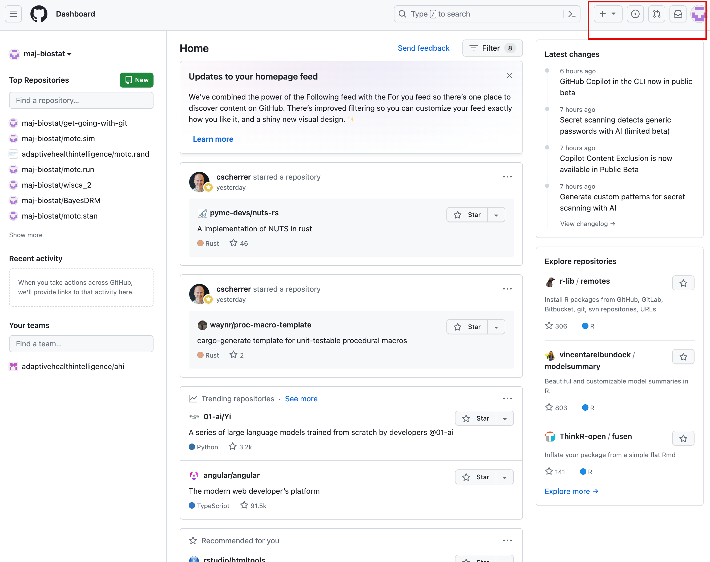
Go to the top right hand corner and click the far right icon to get the drop down, then select your profile. All of the following is based on my account but you can follow along under your login as well, just replace my username with yours in the relevant places.
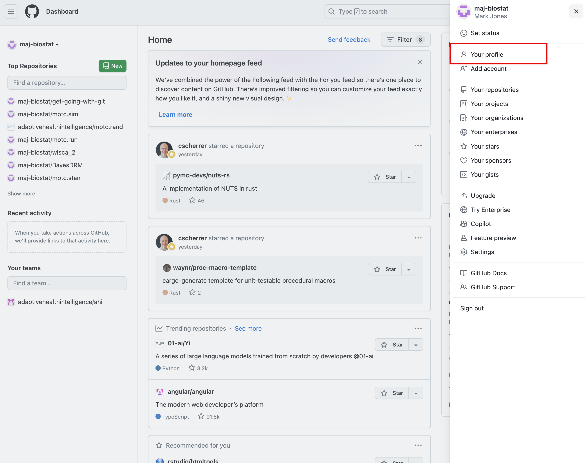
From there you can edit various details pertaining to yourself, review your stats and so on and then jump into the git repositories that you have put onto GitHub.
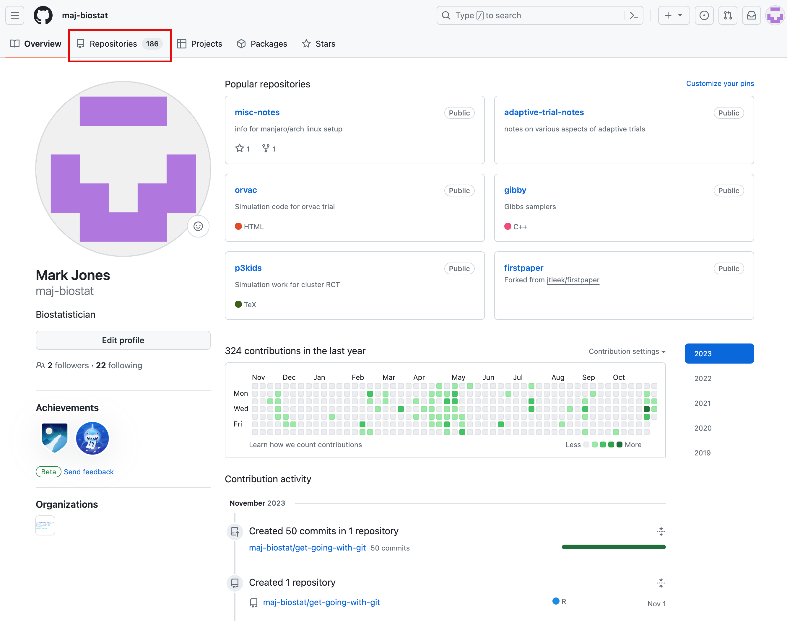
Select the repository link to see a list of all your repositories. You can also get here directly from your landing page via the ‘Your repositories’ link. I have highlighted the get-going-with-git repo. You won’t have this repository at this stage (you might not have any) but that’s ok, just follow along.
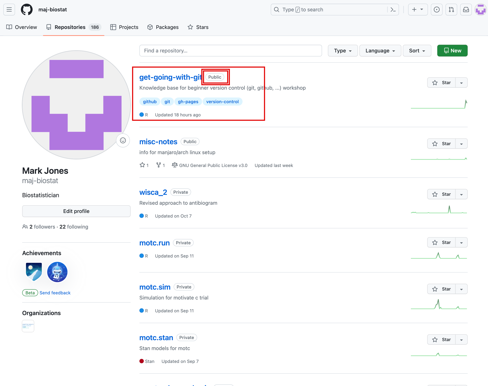
Selecting a specific repository brings up its landing page which includes the repository files, a description file, stats on the repository, settings and various other items. The page that is shown below corresponds to the git repository used to manage this knowledge base and website.
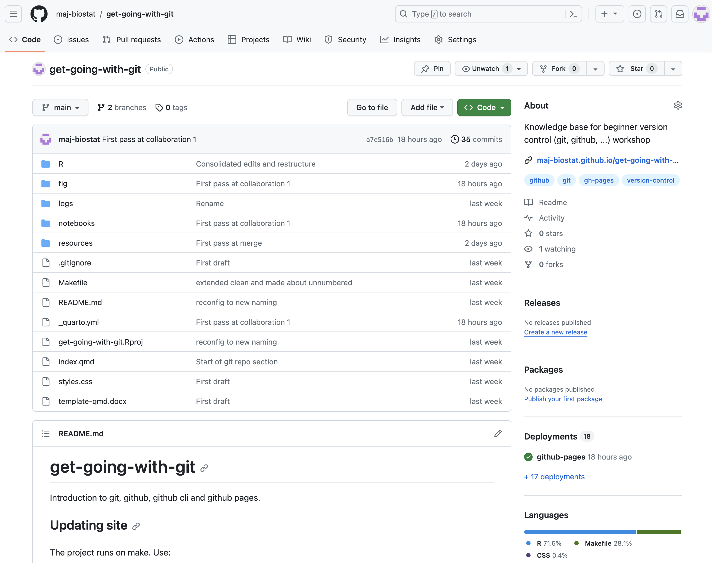
10.2 Common functions via GitHub
Some (if not all) of the functionality that git implements has been integrated into the GitHub platform. Let’s go over some of them briefly.
10.2.1 Initialise repository
There are a few ways to do this. The simplest is to initialise the repo on GitHub then clone it down to your machine. The preferred way to to start with pre-existing local work (repo) and connect it with a remote on GitHub.
10.2.1.1 Initialise on GitHub
You can achieve this directly from any page.
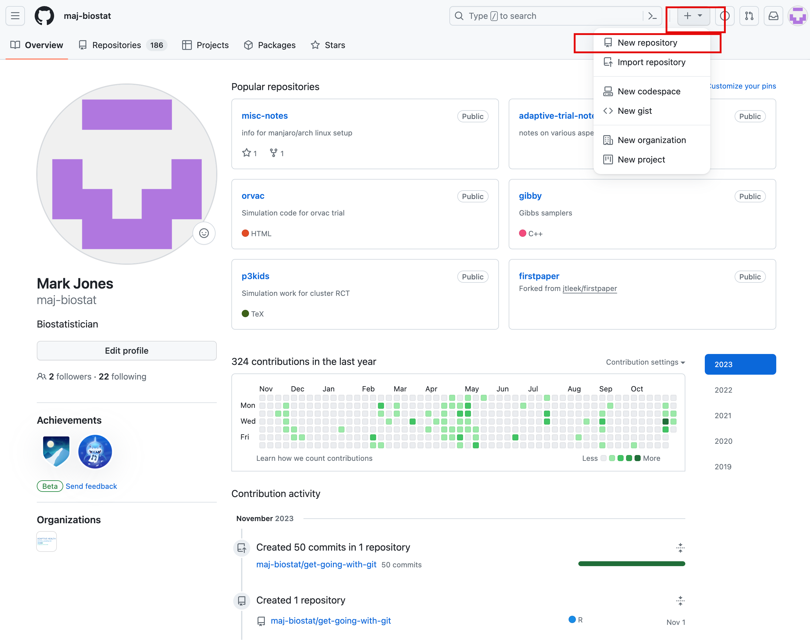
The configuration is largely self-explanatory.
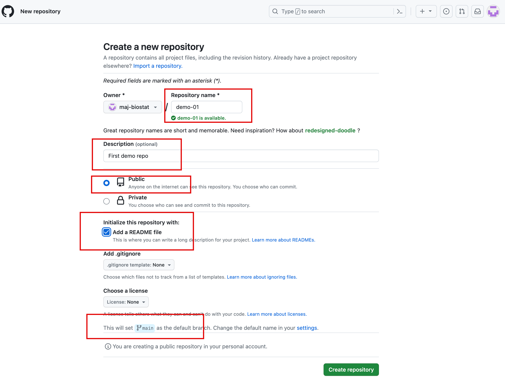
And then you are taken to your new shiny repository page.
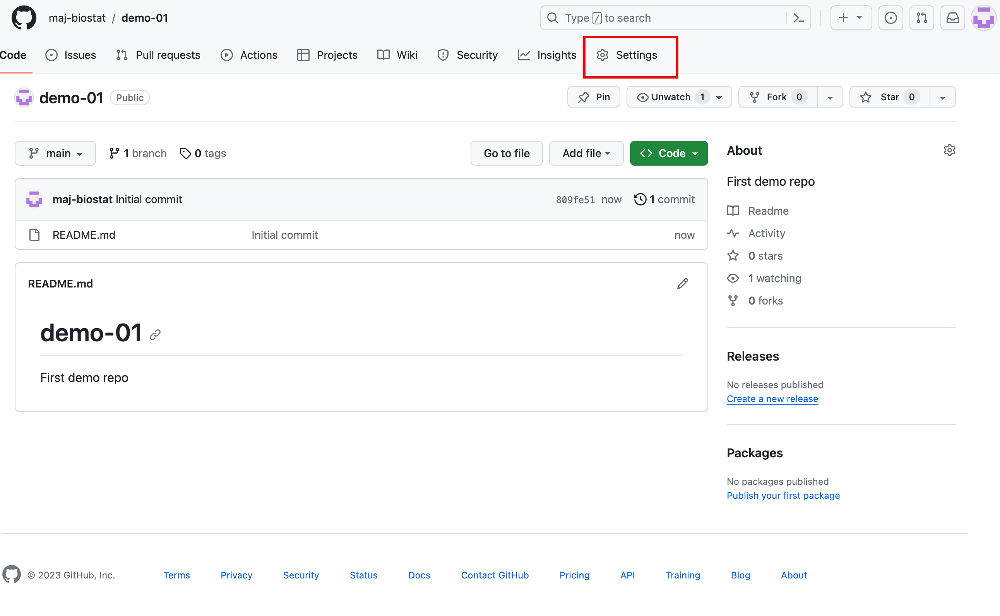
The easiest (but not necessarily the best) way to collaborate via GitHub is to add collaborators to your repository. By adding collaborators, you are giving people read/write access to your repository. It is your responsibility to make sure you are confident that they know what they are doing.
The topic of pull requests (see later) introduce a mechanism that in part mitigates some of the risks associated with collaborative repositories.
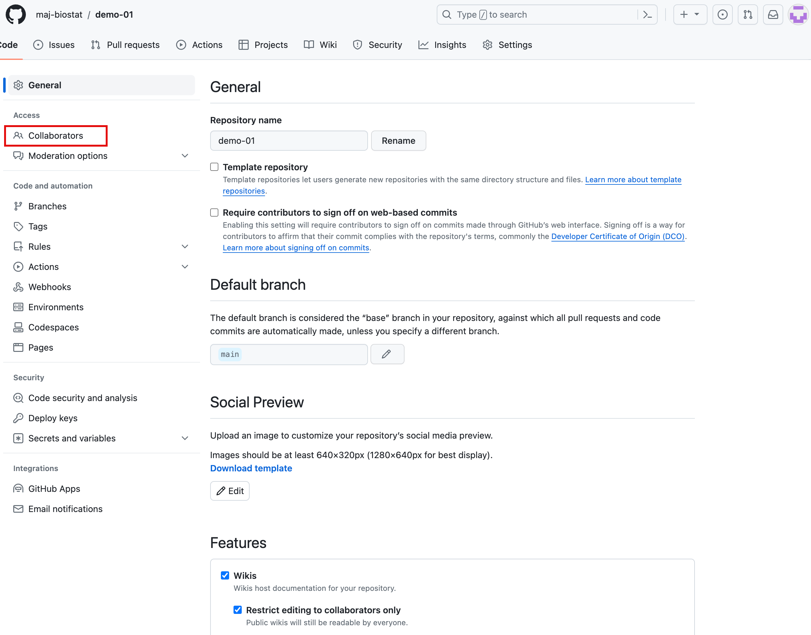
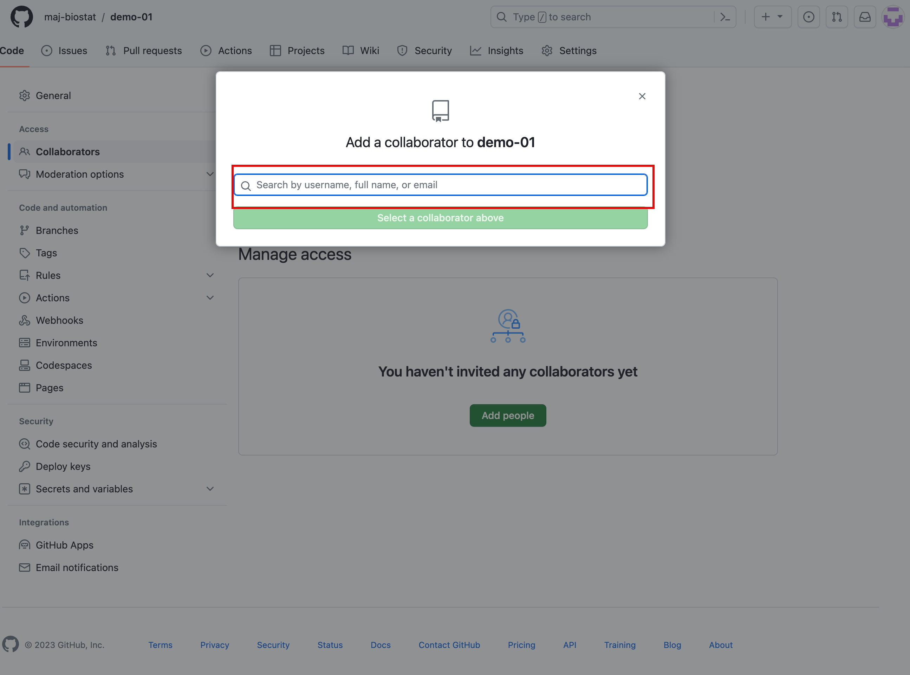
And if you want to change the visibility (public/private) of the repository it is down at the bottom of the general settings under the Dange Zone section.
10.2.1.2 Initialise from existing repository
Again, you can achieve this directly from any page.
The only difference in the setup is that you do NOT to initialize the repository with a readme. You will then be shown the following instructions. The latter case is the one that is applicable, as shown.
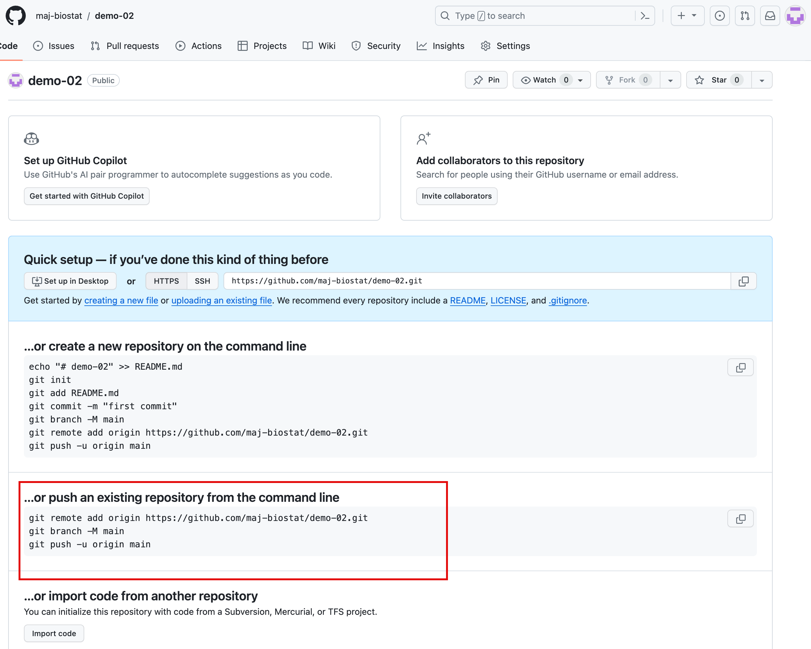
If you recall from the previous discussion on fileserver remotes, we had set the remote for the first-repo repository to be a OneDrive remote. Recapping:
pwd
## /Users/mark/Documents/project/misc-stats/first-repo
git remote -v
## origin /Users/mark/Library/CloudStorage/OneDrive-TheUniversityofSydney(Staff)/first-repo.git (fetch)
## origin /Users/mark/Library/CloudStorage/OneDrive-TheUniversityofSydney(Staff)/first-repo.git (push)While we can technically have multiple remotes, it might be easier to simply unlink from this current remote.
git remote rm origin
git remote -v
## And now add GitHub as the new remote.
git remote add origin https://github.com/maj-biostat/demo2.git
git branch -M main
git push -u origin main
## Enumerating objects: 68, done.
## Counting objects: 100% (68/68), done.
## Delta compression using up to 8 threads
## Compressing objects: 100% (67/67), done.
## Writing objects: 100% (68/68), 6.51 KiB | 3.25 MiB/s, done.
## Total 68 (delta 41), reused 0 (delta 0), pack-reused 0
## remote: Resolving deltas: 100% (41/41), done.
## To https://github.com/maj-biostat/demo2.git
## * [new branch] main -> main
## branch 'main' set up to track 'origin/main'.The git branch -M main simply renames the current branch to main. In practice, this isn’t a problem if you create all of your repositories with a default branch called main instead of master which is the legacy git preferred name.
The git push -u pushes up the branch information and the evolution of the repository. The -u is bsically telling git to link your local main branch with the remote main branch. You only need to use this flag once and thereafter you can use git fetch and git push and git will know which remote you want to communicate with.
When we refresh the github page https://github.com/maj-biostat/demo-02 (replacing my username with your own) then we see that the first-repo now appears on GitHub. It doesn’t matter that the remote repo is called something other than first-repo. Generally you will give things the same names, but not always.
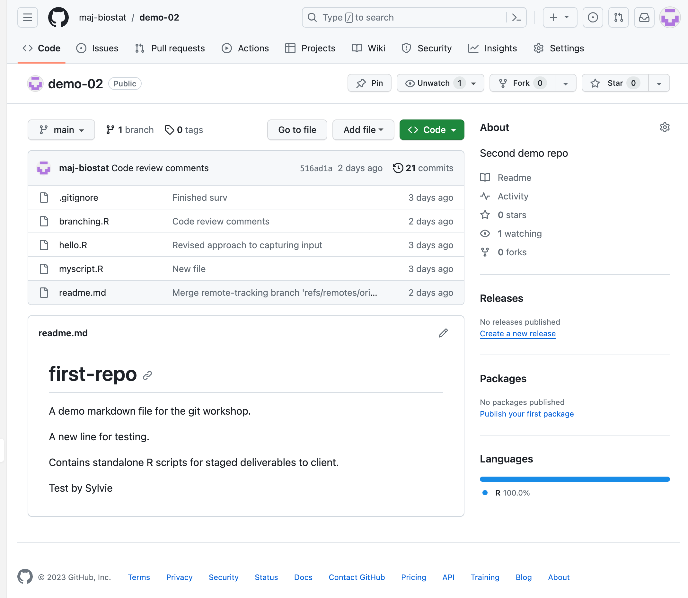
10.2.2 Clone a GitHub remote
In the first approach to initialising a remote (Section 10.2.1.1) we did not bring the remote down to the local machine. However, this is fairly trivial process to achieve by using git clone in a similar manner to how we used it previously.
Navigate back to the demo-01 repository on GitHub, select the green clone button and copy the link to your clipboard.
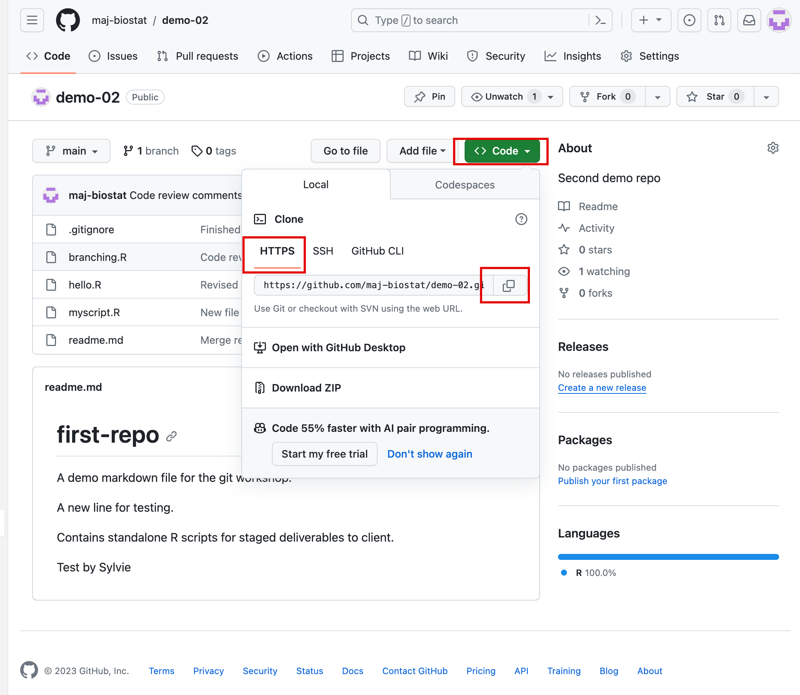
Now head back to your terminal, change directory out of first-repo into the local workshop directory and run the following which clones the demo-01 repository to a local directory named demo-01.
Locally, you can give the remote repository any name you want. Here we have just used the same repository name as the remote, but we could call it my-demo-01 or anything else you want.
git clone https://github.com/maj-biostat/demo-01.git demo-01
## Cloning into 'demo-01'...
## remote: Enumerating objects: 3, done.
## remote: Counting objects: 100% (3/3), done.
## remote: Total 3 (delta 0), reused 0 (delta 0), pack-reused 0
## Receiving objects: 100% (3/3), done.
cd demo-01/
ls -la
## total 8
## drwxr-xr-x 10 mark staff 320 9 Nov 13:29 ..
## drwxr-xr-x 4 mark staff 128 9 Nov 13:29 .
## -rw-r--r-- 1 mark staff 24 9 Nov 13:29 README.md
## drwxr-xr-x 12 mark staff 384 9 Nov 13:29 .git10.2.3 Fetch and push
Once you have linked your local and remote repositories, the workflow is identical to what has been previously introduced.
Let’s work through the process again.
Following best practice, prior to making a change we create a feature branch and then switch to that branch.
git branch dev-01
git checkout dev-01
## Switched to branch 'dev-01'Rather than code something up, simply download the random-numbers.R script (also listed on resources, Chapter 14 page) and save it to the demo-01 repository folder on your machine. Run the script with Rscript random-numbers.R to make sure that it works.
Rscript random-numbers.R
## categorical normal gamma poisson
## Min. -3 -3.56987408 0.0329983 3.00
## 1st Qu. -2 -0.56524365 0.2845135 8.00
## Median 0 0.03029335 0.7235894 9.00
## Mean 0 0.07900788 1.0749329 9.82
## 3rd Qu. 2 0.74139889 1.3816200 12.00
## Max. 3 3.18586281 5.3176913 20.00Now make an arbitrary change to the README.md file then stage and commit the files to the dev-01 branch.
git status
## On branch dev-01
## Changes not staged for commit:
## (use "git add <file>..." to update what will be committed)
## (use "git restore <file>..." to discard changes in working directory)
## modified: README.md
##
## Untracked files:
## (use "git add <file>..." to include in what will be committed)
## random-numbers.R
git add README.md random-numbers.R
git status
## On branch dev-01
## Changes to be committed:
## (use "git restore --staged <file>..." to unstage)
## modified: README.md
## new file: random-numbers.R
git commit -m "Development for demo-01 project"
## [dev-01 fc5f874] Development for demo-01 project
## 2 files changed, 12 insertions(+), 1 deletion(-)Switch back to the main branch and get ready to merge your piece of work into the local main branch1.
git checkout mainLooking at the logs, you can see the dev-01 branch is one step ahead of what we are currently viewing in our working directory.
git log --oneline --decorate --graph --all
## * fc5f874 (dev-01) Development for demo-01 project
## * 809fe51 (HEAD -> main, origin/main, origin/HEAD) Initial commitand the working directory reflects this reality as only the READ.md file currently exists.
ls -la
## total 8
## drwxr-xr-x 4 mark staff 128 10 Nov 11:44 .
## drwxr-xr-x 10 mark staff 320 10 Nov 09:19 ..
## drwxr-xr-x 13 mark staff 416 10 Nov 11:44 .git
## -rw-r--r-- 1 mark staff 26 10 Nov 11:44 README.mdMerge the dev-01 branch into main
git merge dev-01
## Updating 809fe51..fc5f874
## Fast-forward
## README.md | 2 +-
## random-numbers.R | 11 +++++++++++
## 2 files changed, 12 insertions(+), 1 deletion(-)
## create mode 100644 random-numbers.RWe now have all the files and updates:
ls -la
## total 16
## drwxr-xr-x 5 mark staff 160 10 Nov 11:49 .
## drwxr-xr-x 10 mark staff 320 10 Nov 09:19 ..
## drwxr-xr-x 14 mark staff 448 10 Nov 11:49 .git
## -rw-r--r-- 1 mark staff 66 10 Nov 11:49 README.md
## -rw-r--r-- 1 mark staff 203 10 Nov 11:49 random-numbers.RAnd the logs indicate that we are now up to date (note the location of HEAD)
git log --oneline --decorate --graph --all
## * fc5f874 (HEAD -> main, dev-01) Development for demo-01 project
## * 809fe51 (origin/main, origin/HEAD) Initial commitIn this case, we know there have been no changes to the remote during the time where we were doing our development. However, in most collaborative projects, you cannot guarantee this, so we would run a git fetch followed by a git merge to merge any changes that had been pushed to the remote by our collaborators. Finally, we push our updates to the remote, remembering to use the -u flag on this first occasion.
git push -u origin main
## Enumerating objects: 6, done.
## Counting objects: 100% (6/6), done.
## Delta compression using up to 8 threads
## Compressing objects: 100% (4/4), done.
## Writing objects: 100% (4/4), 513 bytes | 513.00 KiB/s, done.
## Total 4 (delta 0), reused 0 (delta 0), pack-reused 0
## To https://github.com/maj-biostat/demo-01.git
## 809fe51..fc5f874 main -> main
## branch 'main' set up to track 'origin/main'.If you wish to push all branches (i.e. both main and dev-01) in this case then you would need to add the --all flag to the git push. In the present example, this would push all the branches up to the remote. All people reviewing the remote can then review the complete history should they need to.
git push --all
## Total 0 (delta 0), reused 0 (delta 0), pack-reused 0
## remote:
## remote: Create a pull request for 'dev-01' on GitHub by visiting:
## remote: https://github.com/maj-biostat/demo-01/pull/new/dev-01
## remote:
## To https://github.com/maj-biostat/demo-01.git
## * [new branch] dev-01 -> dev-01And the change can be observed once the GitHub page is refreshed.
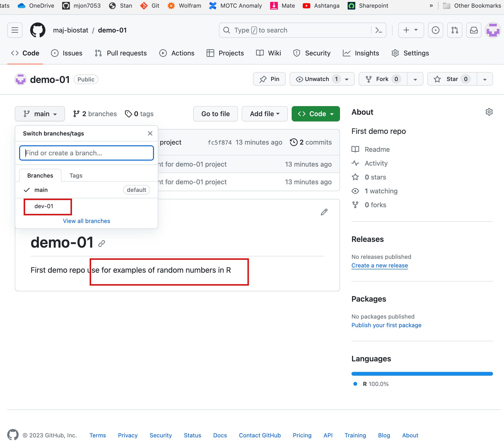
10.2.4 Reviewing history
GitHub provides an interface to review the changes that have occurred on the repo. Clicking on a file within your repository will take you to the file history page where you can review the evolution of the file.
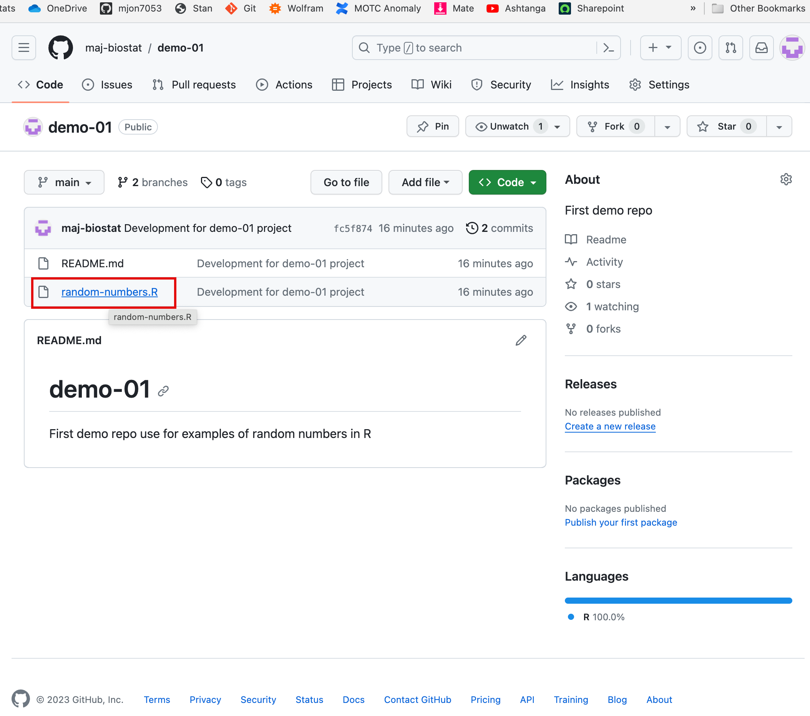
Once the history page opens you can navigate to various versions of a file. One the left you can select the branch of interest (here main is shown). You can view the code or the commit with syntax highlighting or in raw form (which also lets you copy and paste the raw text should you need it). Over on the right are the latest commit point and an open to review the full timeline (History).
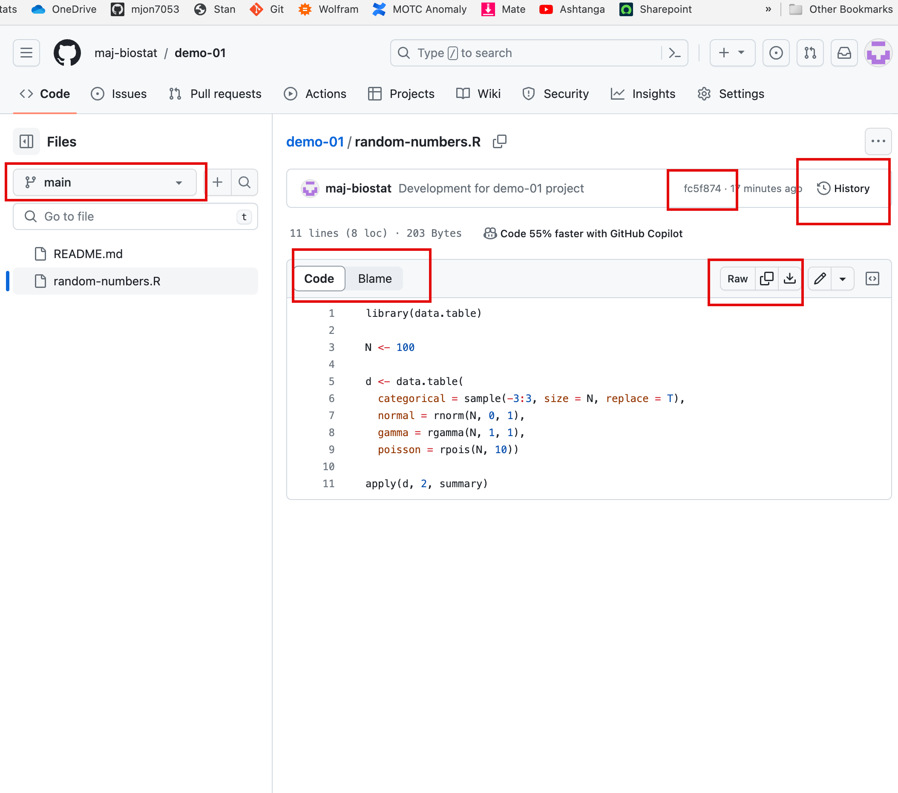
When you review the blame view, you can see determine who did what and when.
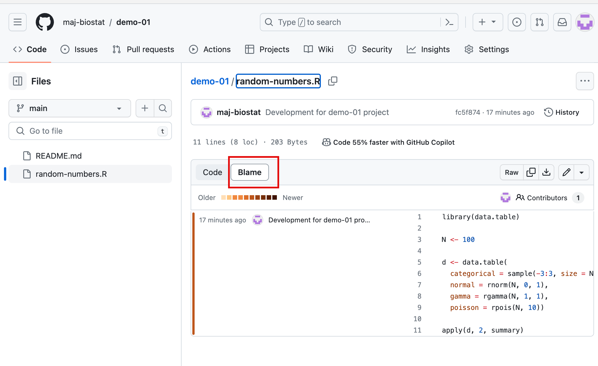
10.2.5 Issues
Issues can be managed directly within GitHub, although they are repository specific. Currently, our team mostly uses Jira to track and manage issues and therefore I will not cover the GitHub functionality beyond mentioning that it is very straight forward to use.
One instance where you may be required to use GitHub issue functionality is when you find a bug in a CRAN package, e.g. https://github.com/rstudio/gt/issues/1415. When doing so, you will find that they require a particular protocol to be followed that include the development of a minimal working example. This is standard practice in software development, it makes a developers life much easier and it is more likely that the problem you are reporting will actually get fixed.
10.3 Exercises
Exercise 10.1 When creating a new branch, we have needed to take to steps. First, we created the branch and then we checked it out. Is there a way this can be done with one command? Hint - Yes What is that command?
I know this is a bit artificial, but it is just for practice↩︎